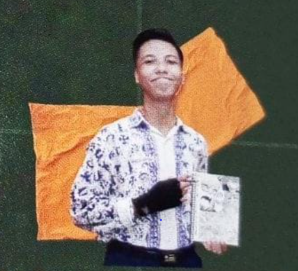
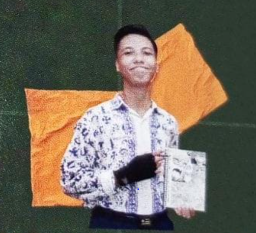

Muhammad Dava Hafiz Permana
Universitas Teknologi Yogyarta - Prodi Informatika 2024
Tentang Saya
Perkenalkan saya Muhammad Dava Hafiz Permana, saya merupakan mahasiswa dari Universitas Teknologi Yogyakarta prodi Informatika 2024. Saya lahir di Boyolali jawa tengah, pada 04 maret 2006, saat ini saya berumur 18 thn. Saya merupakan anak ke 2 dari 3 bersaudara, kakak saya sedang menempuh kuliah yang sudah mencapai semester 5, sementara saya dan adik saya baru saja menempuh masa kuliah baru di semester 1 mau ke semester 2.
Saya memiliki hobi yaitu menggambar, membaca buku, dan badminton, saya juga suka suatu hal yang berkaitan dengan seni dan budaya, seperti batik, tarian daerah, pakaian daerah, dan lain sebagainya. Saya pernah mengikuti kegiatan ekstrakurikuler paskibra disekolah pada tingkat SMP dan sudah mengikuti beberapa lomba. Pada saat itu saya memiliki impian untuk menjadi bagian dari anggota paskibraka tingkat provinsi, akan tetapi pada saat itu, terjadi suatu kejadian, yang dimana terpaksa saya harus merelakan impian saya tersebut.
Impian saya tidak hanya itu saja, Saya juga punya cita cita, yaitu menjadi bos muda di suatu perusahaan besar, yang dimana saya dengan sangat berusaha, saat saya sudah dewasa nanti, saya bisa membahagiakan kedua orang tua saya dan membalas segala kebaikan dari kedua orang tua saya. Tanpa perjuangan kedua orang tua saya, mungkin saya tidak akan bisa melanjutkan pendidikan saya yaitu diperkuliahan, karena bisa dibilang saya dari keluarga sederhana, yang dimana kedua orang tua saya mengkuliahkan 3 orang anaknya, yang dimana itu memerlukan biaya yang tidak sedikit dan juga sangat banyak.
Saat ini saya sedang berproses untuk menjadi pribadi yang lebih baik, mungkin dengan membaca buku yang bisa membantu saya untuk merubah kebiasaan buruk menjadi kebiasaan yang bermanfaat, mengikuti seminar dan webinar yang bermanfaat bagi masa depan saya, belajar public speaking, dan mengembangkan skill saya, suatu saat nanti, saya ingin menjadi orang yang sukses dengan skill yang saya miliki dan membuat orang tua saya bangga, saya akan terus berjuang walaupun sakit dan berat diawal, tapi itu semua demi akhir yang indah untuk saya, keluarga saya, orang tua saya.
Impian saya memang terdengar sangat tinggi bagi saya yang saat ini belum bisa menghasilkan apapun, tetapi jika dengan doa dan usaha, maka saya merasa yakin bahwa tidak ada yang mustahil.
"Anyone can be anything, when there is a wil there is way"
Saya siap menjadi bagian dari generasi emas 2045.
Skills
 



Pendidikan
Pengalaman